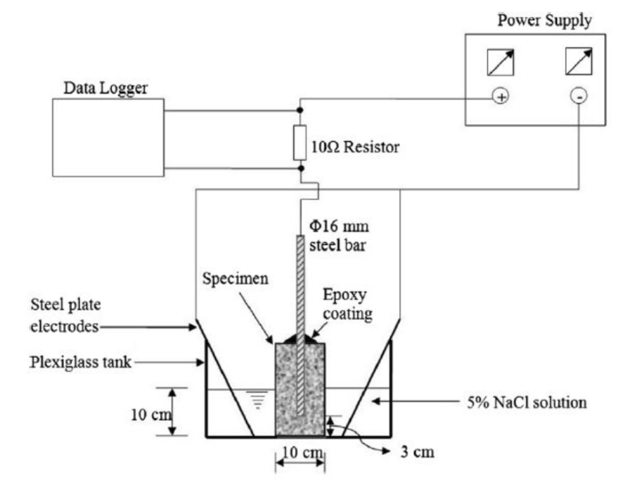

Methodology
Test Procedures
Cement Mortar Cube Testing
Concrete Cube Testing
Accelerated Corrosion Test
Test Specimen and Instrumentation
(1) Concrete cylinder with Diameter-100mm, height -200mm in which a 16mm diameter steel bar (at least 30mm from the bottom of the cylinder which is centrally embedded)
Note: coat with epoxy at the exit to eliminate crevice corrosion
(2) DC power source (30V)
(3) Stainless steel plate
(4) Data logger - to determine the current variation with time
(5) After casting the moulded specimen should be covered with a plastic sheet and left in the room for 24 hour
(6) 5% NaCl solution
Levelled mid-height of the cylinder
(7) Steel bar - anode - connected to the positive terminal
Steel plate - Cathode - connected to the negative terminal
(8) The specimens are placed as below.

(9) The corrosion process was initiated by impressing an anodic potential of 30V. (high voltage is used to accelerate the corrosion process and to shorten the test period)
(10) The specimen is then monitored to see how long corrosion cracks take to appear on the surface. (data logger)
(11) The current increases abruptly when the specimen is cracked, indicating the occurrence of cracking.
Rapid Chloride Penetration Test
#######Add mix design, admixtures, ASTM standard names, and SLS guidelines#######